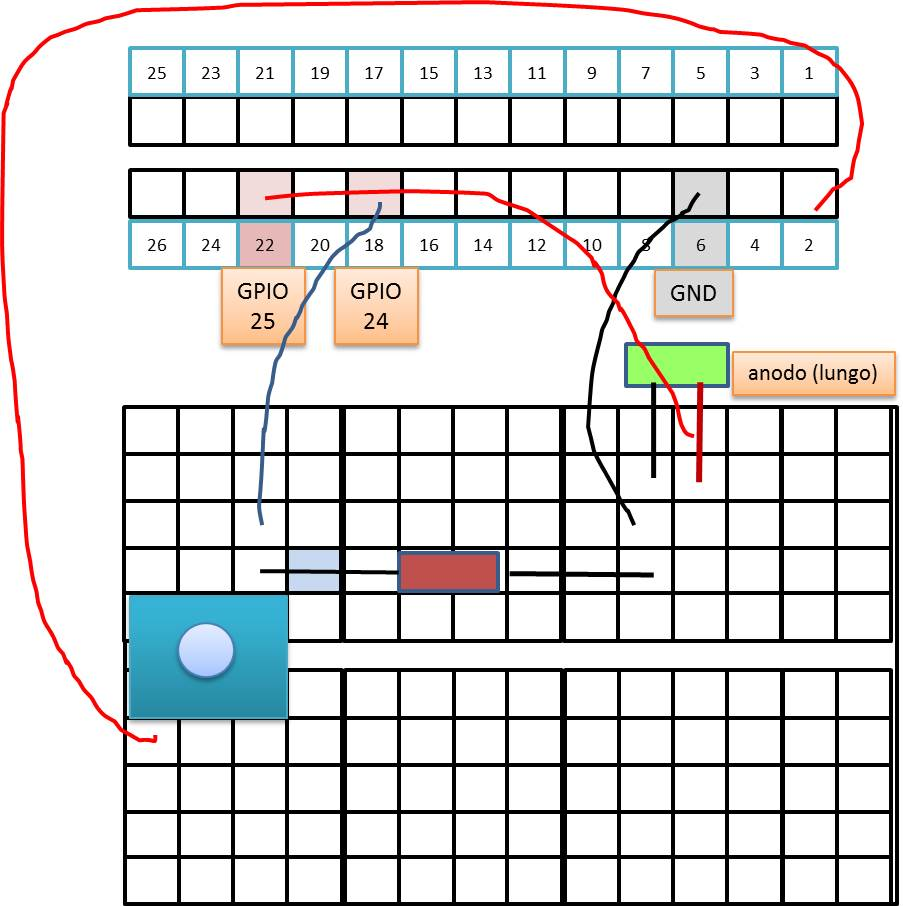

72939 - LAB8 | ButtonLedSystem on a RaspberryPi
INTRODUCTION
- Vision: Technology is fundamental, but it should be something to be properly used, not something we have to be subjected to.
- Goal: Show how a low-cost computational device like RaspberryPi) can be included in our reference ButtonLed case study according to a 'message passing' programming style.
- Work: Our starting point will be a very simple introduction to the usage of RaspberryPi GPIO by means of bash commands, gpio library and Python: see Raspberry Low level Projects Next we will build systems including a physical Led, and a physical Button.
STARTING
- Download and install PuTTY
- Download the unibo SD: 2016-02-26-raspbian-jessie-iss.img.zip (WARNING: 1GB)
- Generate your own Secure Digital card
- Consult rpi_sd.pdf e guida_rpi.pdf
- Insert the SD card in the proper PC slot and look (in the unit
boot ) at the filemywifi.conf :ctrl_interface=DIR=/var/run/wpa_supplicant GROUP=netdev update_config=1 ap_scan=1 eapol_version=1 fast_reauth=1 network={ ssid="natspot" scan_ssid=1 key_mgmt=WPA-PSK psk="123456789" } - Insert the SD card into the RaspberryPi and extend the file system by running:
sudo raspi-config - Connect the RaspberryPi to the PC via a Ethernet cable
- Open PuTTY and connect to 192.168.137.2 port 22
- Login with: pi pswd= raspberry
- Look at the output:
IP 192.168.137.2 Wifi settings /boot/mywifi.conf Web terminal https://192.168.137.2:4200 VNC Remote Desktop 192.168.137.2:1 Password:123456 SMB Network Share \\192.168.137.2\home_pi\
- Access to the RaspberryPi via Windows (connnetti unita di rete):
\\192.168.137.2\home_pi\
The hardware
Connect the hardware :
Resistors
If we need some resistor: Resistor-Colour-Code, resistor-color-code-all, evalColorThe Raspberry Pi has internal pull-up and pull-down resistors that can be specified when the pin declarations are made.
Links (introduction to GPIO control)
- VIDEO: Raspberry Pi GPIO with Java
- About pins: RPi_Low-level_peripherals
- About Raspberry Pi GPIOs control: RPi GPIO Code Samples
- Command-line utility gpio (used by Wiringpi)
- gpio-pins-and-python
- Wiringpi
- Oracle java/RaspberryPi_Setup
- Oracle java/RaspberryPi_GPIO
- Java gpio-web-control
Basic Experiments (interactive)
| Bash | Gpio | Python |
|---|---|---|
led25OnOff.sh
echo Unexporting.
echo 25 > /sys/class/gpio/unexport #
echo 25 > /sys/class/gpio/export #
cd /sys/class/gpio/gpio25 #
echo Setting direction to out.
echo out > direction #
echo Setting pin high.
echo 1 > value #
sleep 1 #
echo Setting pin low
echo 0 > value #
sleep 1 #
echo Setting pin high.
echo 1 > value #
sleep 1 #
echo Setting pin low
echo 0 > value #
|
led25Gpio.sh
gpio readall #
echo Setting direction to out
gpio mode 6 out #
echo Write 1
gpio write 6 1 #
sleep 1 #
echo Write 0
gpio write 6 0 #
|
ledPython25.py
The newest version of Raspbian has the RPi.GPIO library pre-installed. sudo python >>> import RPi.GPIO as GPIO >>> GPIO.VERSION >>> GPIO.setmode(GPIO.BCM) >>> GPIO.setup(25,GPIO.OUT) >>> while True: >>> GPIO.output(25,GPIO.HIGH) >>> time.sleep(1) >>> GPIO.output(25,GPIO.LOW) >>> time.sleep(1) >>> quit() |
Fron file
| Bash | Gpio | Python |
|---|---|---|
|
led25OnOff.sh buttonOn24Click.sh buttonLed.sh |
led25Gpio.sh button24Gpio.sh |
ledPython25.py buttonPython24.py buttonLedPython.py |
Other Basic experiment
Using Pi4J in Java
Useful links (introduction to Pi4J)
Java8+Pi4j (pdf) , Pi4j sitePi4J (project it.unibo.buttonLedSystem.raspberry)
| Led | Button |
|---|---|
 DeviceLedPi4j DeviceLedPi4j
specializes the 'standard implementation': DeviceLedImpl
|
DeviceButtonPi4J specializes the 'standard implementation': DeviceButtonImpl
|
Connect the RaspberryPi to a PC with Wifi (future applications).
- Insert a WIFI adapter (e.g. EDUP - Adattatore Wifi Mini USB,150MBps) in a USB slot.
- Activate an hot spot (e.g by using a smart device) with name natspot and password 123456789
- Turn on the RaspberryPi. It will acquire an address (192.168.43.xxx) as shown by the command ifconfig
- Open PuTTY and connect to 192.168.43.xxx on port 22
By AN Unibo-DISI